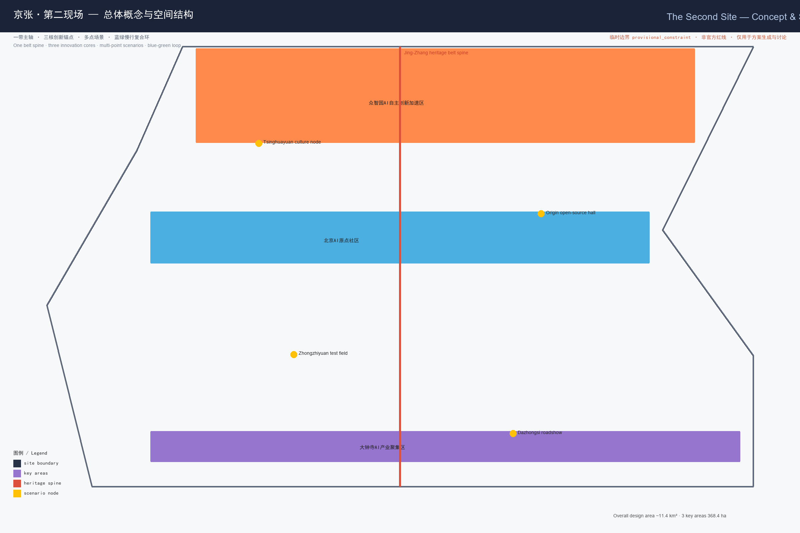
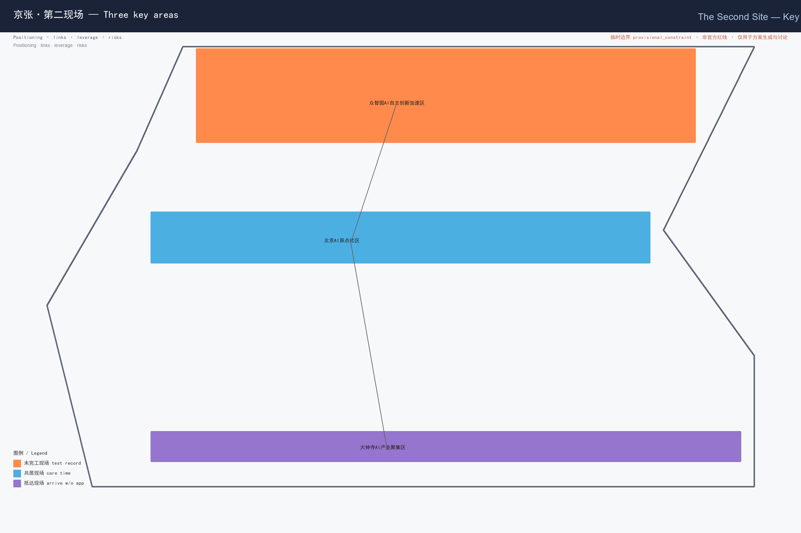
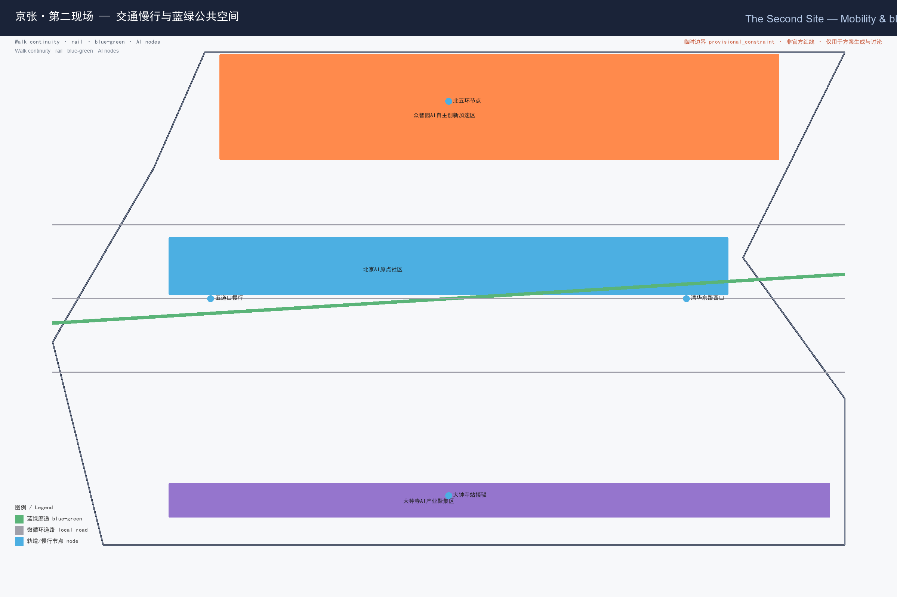
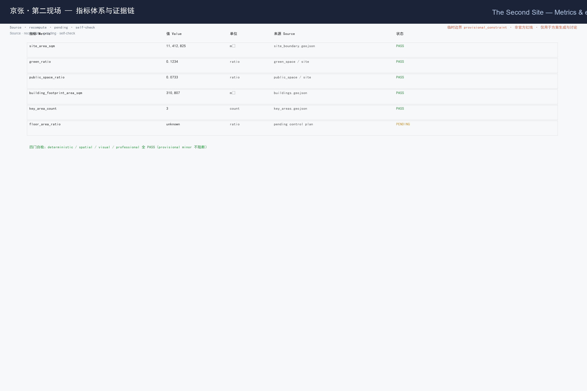

The Second Site
The Second Site reframes the Jing-Zhang railway heritage as a 'first site' (a construction and historical site) and proposes an AI-era 'second site' where global developers, researchers, residents and visitors restart and leave traces. Each visitor earns a verifiable Contribution Receipt across the three key areas, unlocking urban entitlements, participatory governance and cumulative brand assets through an open co-creation mechanism.
The Second Site
Design Basis and Source List
This formal proposal takes the pre-qualification announcement of the Centennial Jing-Zhang AI Innovation Belt international urban design call (Beijing Haidian District Bureau of Territorial Planning) as its primary basis Source, and uses the maintainer-registered provisional boundaries, key areas, enumerations, metrics and source lists in brief/site-package/ as machine-readable basis Source Source. Before generating, the agent read design_brief.json, allowed_design_space.json, agent_taskbook.json, sources.json, enums/, ranges/, schemas/ and data/source_registry.json, using data/processed/agent_fact_pack.md as a reading map Source. Every design judgement is decomposed into traceable sources, recomputable metrics, verifiable layers and human-reviewable assumptions; the announcement requires control-plan-level urban design depth and comprehensive implementation-plan depth, so narrative cannot replace GeoJSON, metric tables, A3 booklet, A0 boards and the HTML viewer Depth.
The SITE_BOUNDARY and three KEY_AREA polygons used here are maintainer-defined provisional boundaries (area deviation +0.02%~+0.43%), and must be marked official_boundary=false, geometry_role=provisional_constraint; they serve only generation, self-check, visualization and discussion, and must not be treated as official redline, approval basis or precise-area basis Spatial data Source Source. The organizer data gap does not block content scoring; once official polygons are released, site boundary, key areas, land use, roads, green space, public space, buildings, phasing and metrics must all be recomputed Metric.

Three-Level Scope Framework
The proposal organizes work along the three announced scopes: the coordinated research area (43.6 km²) addresses the AI industry ecosystem and future urban form; the overall design area (11.4 km²) addresses the urban-renewal framework, industry space, transport/municipal support and urban character; the key detailed-design area (368.4 ha) addresses the three areas' functions, building scale, retain/renovate/demolish, public space and transport Depth. The three scopes are mapped item-by-item in compliance_matrix.json so that announcement sections 1.3, 1.4, 1.5 and agent.1–agent.6 all have chapter, layer, metric, drawing and HTML evidence Depth.
The overarching concept is The Second Site: the Jing-Zhang railway is the "first site" — the construction and historical site of China's first self-designed railway; the AI-era centennial Jing-Zhang is the "second site" — where global developers, researchers, residents and visitors restart and leave traces Source. "Site" carries a double meaning: both an urban-renewal worksite and the media sense of "first site / second site". The "belt" takes the Jing-Zhang heritage park as its historical and public-space spine; "three cores" map to Zhongzhiyuan, Beijing AI Origin Community and Dazhongsi; "multi-point scenarios" are operable AI+ nodes; the "composite loop" links walkways, green space, public space and event routes.
| Tier | Design question | Proposal answer | Data anchor |
|---|---|---|---|
| Coordinated research area | How to organize AI ecosystem & future city | An innovation chain of "university sourcing — open-source collaboration — enterprise conversion — public experience — international communication" | compliance_matrix.json, standard_matrix.json |
| Overall design area | How to land industry, renewal, transport, character | Land use, buildings, roads, green, public space and phasing layers together | Spatial data, Spatial data |
| Key detailed-design area | How the three areas reach detailed depth | Distinct positioning, spatial moves, AI scenarios, implementation dependencies | Spatial data, Spatial data, Spatial data |
Coordinated Research Area: Industry and Future City Research
The core task of the coordinated research area is building a world-class AI innovation ecosystem Standard. This proposal introduces a Contribution Receipt as the hub of the innovation chain: universities and open-source communities produce reproducible research and models (sourcing), enterprises convert them (conversion), public space hosts experience and international communication (experience), and every participant's contribution is recorded as a verifiable receipt, forming a coordination framework for talent, capital, compute, data and scenarios Depth. Naming and visual identity serve the overall recognizability of "Centennial Jing-Zhang Culture Belt, Urban AI Living Experience Belt, AI Fusion Innovation Belt", without confusing with existing parks or enterprise names Standard.
Requirements from the agent open-call taskbook are answered as agent open-call tasks, not statutory planning controls Source. Future-city research answers how AI changes work, life, socializing, learning, transport and public services: AI transport, continuous green space, innovation service facilities and an international living-working atmosphere are landed as locatable function zones, nodes, corridors and scenarios Depth. Global AI events, developer communities, open scenarios and pilgrimage routes are written as "concept proposals / reference schemes / materials for professional teams to deepen", never as confirmed government activities or implementation arrangements Depth.
Overall Design Area: Urban Renewal and Regulatory-Plan-Level Urban Design
The overall design area requires control-plan-level urban design depth Standard. geometry/land_use.geojson fully covers the boundary with no overlap; geometry/buildings.geojson expresses renewal and retained building footprints; geometry/roads.geojson expresses micro-circulation, walking and rail-interchange relations; metrics.json recomputes core areas, ratios and layer counts Depth Depth. The overall design also supports transport, rail, municipal and facilities: rail-station integration, road micro-circulation, bike parking, parking supply, innovation-service platforms, talent-living services, new infrastructure, distributed energy and edge compute are given spatial layout and implementation paths Depth.
Where building height, development intensity, road redlines, setback and facility standards lack official conditions, status=unknown is used uniformly with reason/assumptions stating pending conditions and recomputation paths; agent estimates must not masquerade as approved metrics Metric. The Second Site mechanism lands on the overall structure: the Jing-Zhang heritage park is the north–south spine linking the three key areas, and the Contribution Receipt is the soft interface for talent, scenario and entitlement flow between areas — not a new redline Spatial data.
Detailed Design of Key Areas
The key detailed-design areas are mandatory; the three areas each carry a "site contract":
- Zhongzhiyuan AI Acceleration Area (Unfinished Site / TEST WITHOUT BLOCKING): a garden-type full-stack autonomous-innovation block. Spatial moves strengthen the Qinghe riverfront, industry showcase, low-carbon innovation exchange and external transport; green space hosts open testing and standards-governance showcase; the Contribution Receipt = test records (verifiable model red-team and standards-conformance records) Spatial data.
- Beijing AI Origin Community (Co-living Site / CARE WITHOUT ACCOUNT): a near-campus achievement-conversion and talent community. It stitches campus–park–block walkways, and supplies achievement release, talent services, living and open-source collaboration space; the Contribution Receipt = care hours (timed records of community volunteering, open-source maintenance, public-space operation) Spatial data.
- Dazhongsi AI Industry Cluster (Arrival Site / ARRIVE WITHOUT APP): an urban intelligent-economy and international-exchange block. It centers Dazhongsi station integration, four-quadrant walk connectivity, commercial services and key-enterprise public-environment renewal; the Contribution Receipt = account-free transactions (public experiences and consumption interfaces usable without registration or identity profiling) Spatial data.
All three key areas must appear in geometry/key_areas.geojson and be marked provisional; once official polygons are released they should replace as official_constraint Depth. Design expression includes function, building scale, form, retain/renovate/demolish, public-space system, transport, walk connectivity and implementation projects [compliance_matrix.json] (1.5.3.1/1.5.3.2/1.5.3.3).

| Key area | Positioning | Spatial move | AI industry & operation scenarios | Evidence |
|---|---|---|---|---|
| Zhongzhiyuan AI Acceleration | Unfinished site · full-stack autonomy | Strengthen Qinghe front, industry showcase, low-carbon exchange | Autonomous model testing, standards workshop, safety-governance showcase | Spatial data, Depth |
| Beijing AI Origin Community | Co-living site · conversion & talent | Campus–park–block walk stitching, open-source collaboration | Open-source community, achievement release, talent services | Spatial data, Source |
| Dazhongsi AI Industry Cluster | Arrival site · intelligent economy | Dazhongsi station integration, four-quadrant walk | Agent showcase, content consumption, data-element roadshow | Spatial data, Metric |
AI Innovation Ecosystem, Personas, and AI+ Scenarios
The proposal builds spatial demand personas for AI talent and enterprises across R&D, open-source collaboration, achievement release, enterprise services, talent living, social learning, consumption, sport and international exchange Depth. AI+ scenarios cover transport, services, consumption, healthcare, education, law and daily-life services, each stating service object, location, data source, privacy boundary, human-review mechanism and operating entity Depth.
AI governance follows data-minimization, open-source, explainability and human-review: city agents may assist identifying walk gaps, public-space heat, facility maintenance, enterprise-service demand and event risk, but cannot replace planning approval, output unauthorized personal profiles, or claim official implementation commitment Depth. All AI scenario nodes enter structured layers or the compliance matrix so reviewers see their relation to industry, space and public interest Spatial data.
| Persona | Typical need | Spatial response | Self-check boundary |
|---|---|---|---|
| Open-source developer | Release, collaborate, test, reputation | Origin open-release hall, public code wall, night协作 space | No personal-trajectory collection; aggregate-only analytics |
| Startup team | Low-cost office, compute access, testbed | Zhongzhiyuan shared test field, edge-compute point | Compute/data services need separate authorization |
| Enterprise visitor | Showcase, business, international reception | Dazhongsi roadshow lounge, station interchange | Enterprise marks/cases need clearance |
| Nearby resident | Commute, leisure, community, low-disturbance renewal | Jing-Zhang park walk loop, community embedding | No resident profiling for commercial push |
| Faculty & students | Conversion, cross-campus, daily walk | Campus–park walk stitching, conversion station | Campus data & research need authorization |
| Scenario card | Carrier | Design note |
|---|---|---|
| 01 Open-release hall | Beijing AI Origin Community | Release, code-contribution showcase, small roadshow for campus/open-source/startups |
| 02 Safety-governance sandbox | Zhongzhiyuan | Standards, safety eval, model red-team as visitable, bookable, supervised nodes |
| 03 Edge-compute station | Overall-design nodes | Edge inference tied to public/enterprise services & low-carbon energy, prototype |
| 04 AI walk navigation | Jing-Zhang heritage belt | Explainable signage + low-intrusion sensing for walk gaps, crowding, accessibility |
| 05 Dazhongsi roadshow lounge | Dazhongsi cluster | Showcase, negotiation, media, international exchange for agents/terminals |
| 06 Qinghe low-carbon corridor | Zhongzhiyuan riverfront | Green space, stormwater, walk/cycle, AI showcase as campus living room |
| 07 Near-campus conversion street | Beijing AI Origin | Incubation, showcase, legal, IP, investment services for conversion |
| 08 Data-element lounge | Dazhongsi | Compliant, authorized, auditable data-element city-service interface |
| 09 AI life-service model street | Community/commerce | Healthcare, education, law, life-service AI+ in operable small blocks |
| 10 Global AI Week route | Belt public-space system | Walkable, communicable route from heritage to open-source to industry to roadshow |
| 11 Contribution-receipt station (validation) | Three-area interchange | Test records / care hours / account-free tx as verifiable receipts for pro teams to deepen |
| 12 Accessibility co-inclusion node (validation) | Park & stations | Low-intrusion sensing + human review, validates accessibility without privacy breach |
| 13 Low-carbon compute experience (validation) | Zhongzhiyuan | Edge inference demo + energy visualization, validates green-compute narrative |
Land Use, Building Scale, and Retain-Renovate-Demolish Strategy
Land use follows public standards for territorial survey, planning and use regulation, forming a complete, closed, seamless partition Standard. geometry/land_use.geojson contains four classes — AI R&D, park/green open space, industry-service/commerce, community-support — covering the full boundary with no overlap Spatial data. Buildings distinguish retained/renovated/renewed/new/pending, stating footprint, function, scale, character, roof, massing and height guidance; without status, ownership, control plan or engineering conditions, only methods and calibration checklists are given, no fabricated conclusions Depth Depth.
Building scale and intensity are consistent with metrics.json and layers; where total scale, FAR, height, density, green ratio, setback and control lines lack official conditions, status=unknown is used with recomputation paths Metric. The A3 booklet gives the renewal list and metric table; the A0 board expresses key structure and key areas; the HTML gives metric-layer linkage.
Transport, Rail, Municipal Infrastructure, and Public Services
Transport answers the announcement's requirements for rail-station integration, road micro-circulation, walk gaps, external transport, parking, bike parking and green transport Depth. It covers the north 5th ring, the Jing-Zhang park ring-crossing nodes, Wudaokou, Qinghua East Road West, Dazhongsi station and key-enterprise surroundings; road and walk layers stay within the submitted boundary and cross-check with public space, green, industry nodes and key areas Spatial data. Municipal and public services cover AI-industry facilities, innovation platforms, talent-living services, new infrastructure, distributed energy, edge compute and traditional municipal fusion, stating standards, layout, radius, operation and phasing Depth.
Where road redlines, pipelines, fire and municipal conditions are missing, assumptions.json states pending items rather than presenting strategy as approved conditions Spatial data.

Blue-Green Network, Public Space, and Urban Character
Blue-green space takes the Jing-Zhang heritage park vitality belt as backbone, coordinating Qinghe, Xiaoyuehe, surrounding universities, enterprises and communities, proposing north–south and east–west walk/cycle/green systems Depth. The proposal identifies walk gaps, ring-road crossing nodes, park north/south landscape nodes, and proposes parking, sport, innovation exchange, tech testing, application showcase and public-service composite use Spatial data Spatial data Metric Metric.
Urban character fuses Jing-Zhang railway history, Zhongguancun innovation culture and AI innovation culture, using Tsinghuayuan station, Beijing Film Academy and other resources for urban tone, building character, roof form, massing, interface and public-art guidance Standard. The proposal gives signage, cultural symbols, international narrative, AI pilgrimage landmarks and a contribution wall / honor system, but all brands, fonts, images, portraits and enterprise marks must be cleared Depth.
Renewal Projects, Implementation Policy, and Phasing
The implementation plan forms a reviewable renewal list stating location, type, function, responsible entity, dependencies, phase, risk and metrics Depth. Policy covers renewal coordination, space supply, operation, industry service, public participation, data governance and property coordination; geometry/phasing.geojson expresses phasing, and compliance_matrix.json links each task to phasing and drawings Depth Spatial data.
| ID | Project | Type | Key dependency | Evidence |
|---|---|---|---|---|
| JZ-01 | Jing-Zhang park walk-gap stitching | Public space / transport | Road redline, under-bridge, traffic review | Spatial data |
| JZ-02 | Zhongzhiyuan Qinghe innovation front | Blue-green / industry showcase | River blue-line, ecology, flood | Spatial data |
| JZ-03 | Origin near-campus conversion street | Renewal / industry service | Campus boundary, ownership, ground-floor | Spatial data |
| JZ-04 | Dazhongsi four-quadrant walk | Rail integration / walk | Station, intersection, municipal | Spatial data |
| JZ-05 | AI public service & edge-compute node | New infra / public | Energy, compute, security, operator | Spatial data |
| JZ-06 | Global AI Week public route | Operation / brand | Public-space permit, event safety, rights | Spatial data |
Phasing is distinct from the 100-day submission cycle: the cycle is for deliverables; phasing is the urban-renewal and construction path. The proposal gives near-term pilots (light facilities, operations, service platforms), mid-term renewal (key-area detailed design and ownership coordination), and long-term governance (Contribution Receipt system and brand-asset sedimentation) Depth. Annual event system, developer-community operation, scenario open-days, public experience routes and international communication state operating object, frequency, responsibility boundary, conversion path and risk — no slogans only Depth.
Metrics, Area Recalculation, and Compliance Matrix
Core metrics are recomputed under EPSG:4548 from provisional boundaries: site_area_sqm=11412825.386, green_ratio=0.1234, public_space_ratio=0.0733, building_footprint_area_sqm=310807.184, key_area_count=3 Metric Metric Metric Metric. floor_area_ratio is unknown for lack of official control plan Metric. Metrics carry full fields status/value/unit/source_files/formula/confidence/assumptions in metrics.json; the HTML presents them via data-metric/data-value consistent with metrics.json Depth.
The compliance matrix compliance_matrix.json covers announcement 1.3 (3), 1.4 (3), 1.5 (1.1/1.2/2.1–2.5/3.required/3.1–3.3 = 14) and agent.1–agent.6 (6), totaling 23 mandatory tasks; the standard matrix standard_matrix.json covers 6 mandatory standards; the design-depth matrix design_depth_matrix.json covers 15 core depth items all complete Depth Depth Depth.

Risk, Copyright, and Compliance
All spatial suggestions are concept proposals, reference schemes or materials for professional teams to deepen; they do not replace formal planning nor constitute government-approved conclusions Depth. Boundaries are provisional and stated in proposal.md, sources.json, assumptions.json, visual/index.html and self_check.json as not official redline Source. Privacy and copyright: scenarios set data-minimization and human-review boundaries, collect no personal-trajectory, and avoid resident profiling for commercial push; cited cultural resources, enterprise cases and images must be cleared, and unauthorized fonts, images, trademarks, portraits or paper figures are not used Depth. The Contribution Receipt system is a conceptual prototype; its on-chain/centralized registration, entitlement exchange and policy linkage need separate authorization and legal procedure, and this proposal claims no implementation commitment.
References
- Beijing Haidian Bureau pre-qualification announcement (DATA-SRC-OFFICIAL-ANNOUNCEMENT-20260509)
- Agent open-call taskbook (SRC-2026-0518-AGENT-OPEN-CALL-TASKBOOK)
- Maintainer provisional-boundary derivation & open-source check (provisional_boundaries_basis.md)
- Public source registry (data/source_registry.json)
- Standards reference index (brief/site-package/standards/references/index.json)